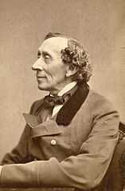

<p>Hans Christian Andersen often referred to in Scandinavia as H. C. Andersen; April 2, 1805 – August 4, 1875) was a Danish author and poet. Although a prolific writer of plays, travelogues, novels, and poems, Andersen is best remembered for his fairy tales. Andersen's popularity is not limited to children; his stories—called eventyr, or "fairy-tales" – express themes that transcend age and nationality.</p>